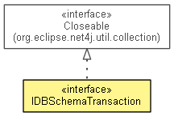

org.eclipse.net4j.db
Interface IDBSchemaTransaction
- All Superinterfaces:
- Closeable
- public interface IDBSchemaTransaction
- extends Closeable

- Since:
- 4.2
- No Implement
- This interface is not intended to be implemented by clients.
- No Extend
- This interface is not intended to be extended by clients.
DEFAULT_ENSURE_SCHEMA_POLICY
static final IDBDeltaVisitor.Filter.Policy DEFAULT_ENSURE_SCHEMA_POLICY
getDatabase
IDBDatabase getDatabase()
getConnection
IDBConnection getConnection()
getWorkingCopy
IDBSchema getWorkingCopy()
ensureSchema
IDBSchemaDelta ensureSchema(IDBSchema schema,
IDBDeltaVisitor.Filter.Policy policy)
ensureSchema
IDBSchemaDelta ensureSchema(IDBSchema schema)
getSchemaDelta
IDBSchemaDelta getSchemaDelta()
commit
IDBSchemaDelta commit()
Copyright (c) 2011, 2012 Eike Stepper (Berlin, Germany) and others.